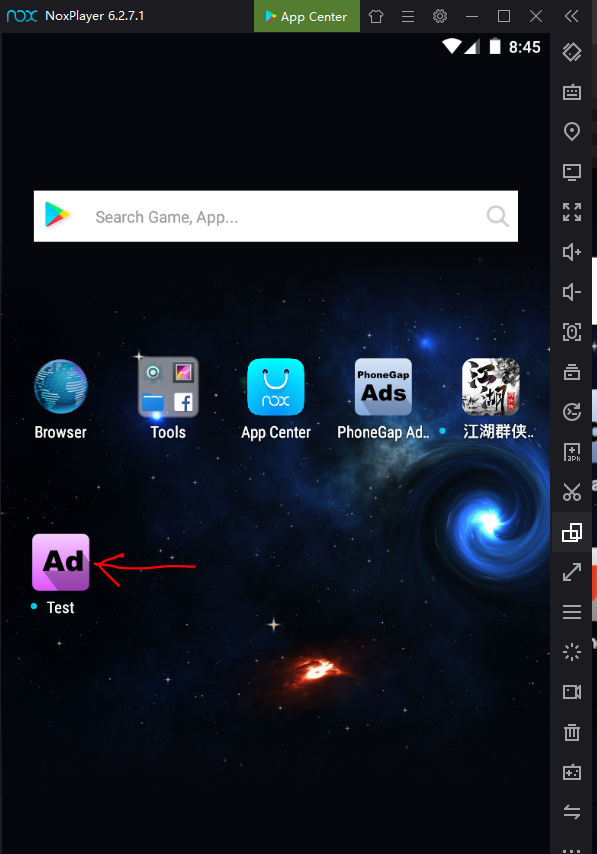

Download nox player from my.bignox.com. Click on the button which says: "Muat Turun". After downloading has completed, install it and start the emulator and rotate it in portrait orientation by clicking on the rotate button as indicated by the red arrow below:
Then drag the apk file which you have downloaded from build.phonegap.com onto the desktop of the nox player. This will install the apk. You will then be able to see the icon144.png on the desktop of the emulator. Click on it to run your app:

You app will run. Click on the any of the buttons to test. You should be able to see an alert dialog:
Congrats!. Your apk is working. This concludes this lesson. In the next lesson, we will put AdMob ads and let them show when we click on the buttons.